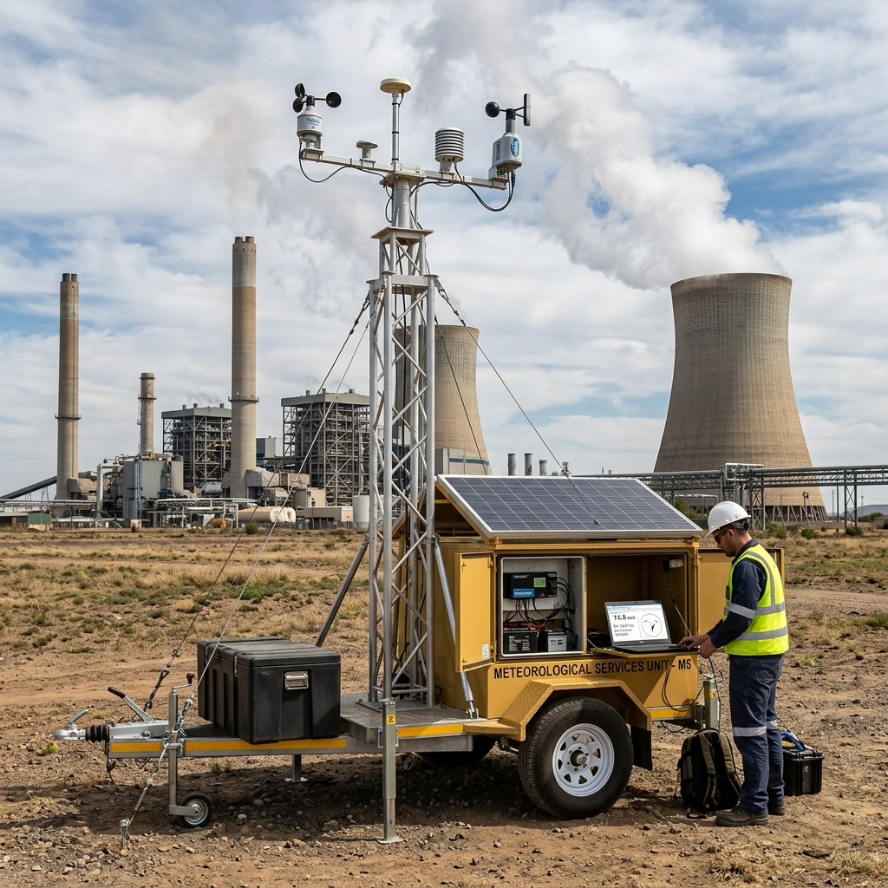
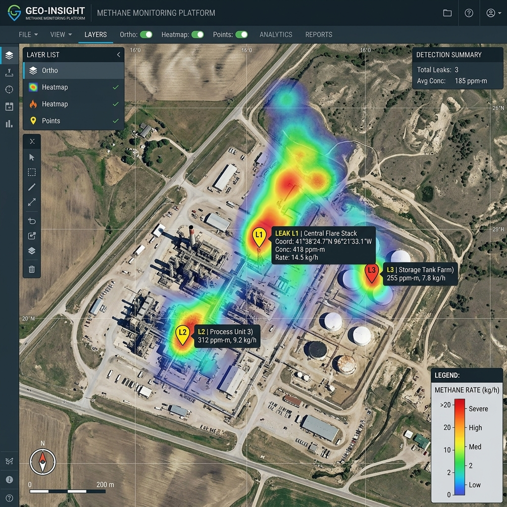
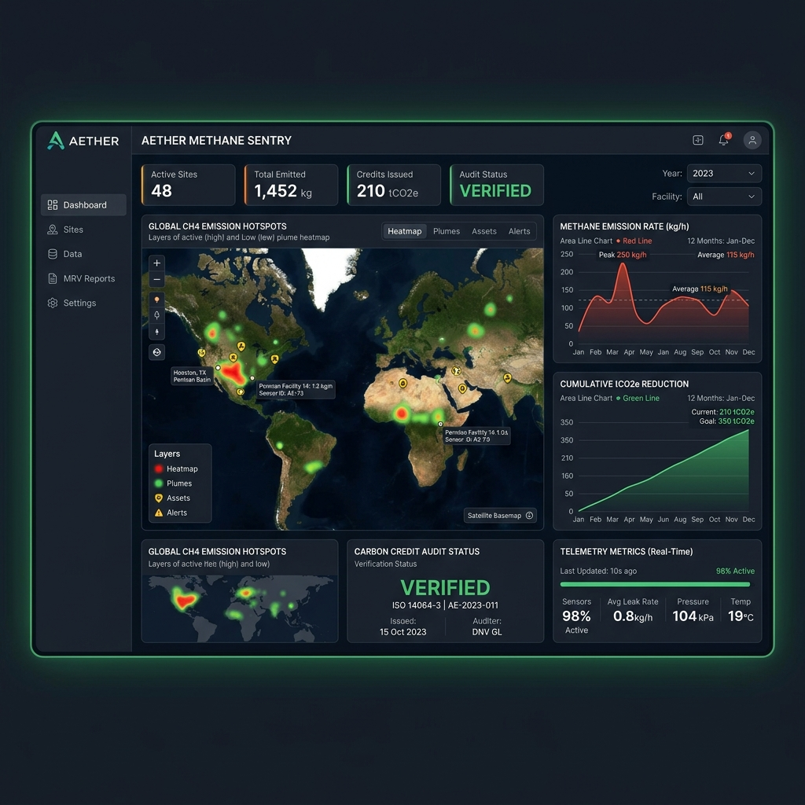
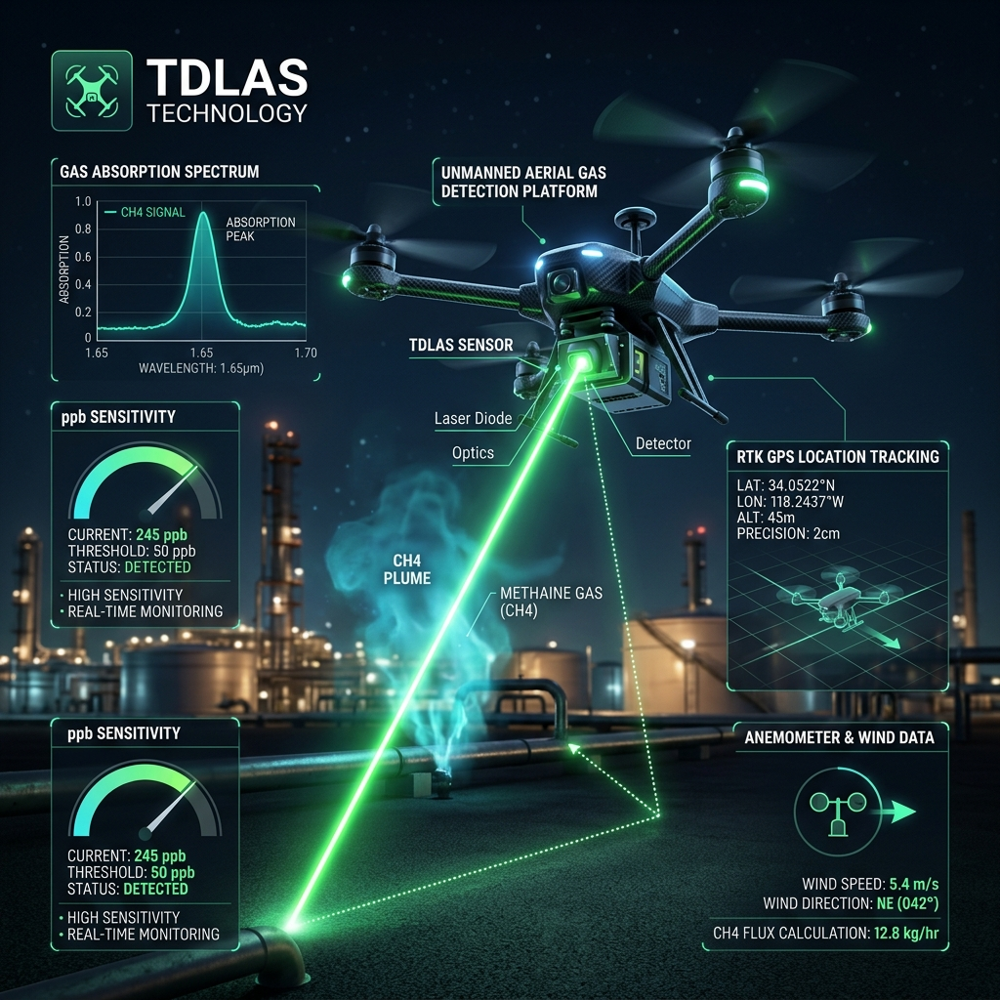
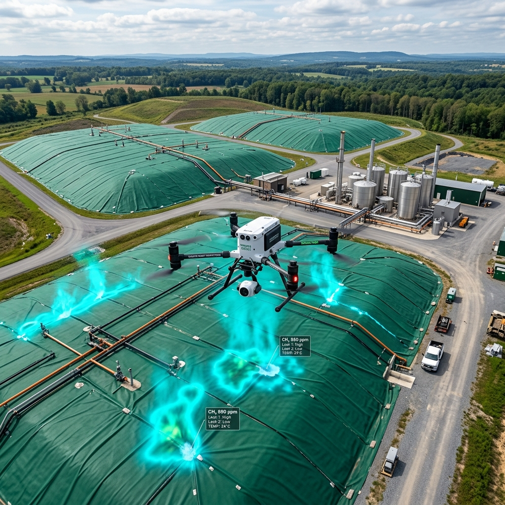

Phát hiện & định lượng rò rỉ methane bằng UAV-TDLAS – từ số liệu đo đến tín chỉ carbon
Khảo sát nhanh, an toàn hạ tầng Khí – Dầu – Than – Chất thải; chuyển dữ liệu đo đạc thành hồ sơ MRV tin cậy, sẵn sàng cho kiểm kê khí nhà kính và thị trường carbon từ 2029.
Cảm Biến Laser TDLAS
Đo nồng độ cột ppm·m • Độ nhạy ppb
Mô Hình Plume NGI
Mass Balance & Tốc độ phát thải kg/h
Nỗi đau & rủi ro rò rỉ Methane tại các cơ sở công nghiệp
Chủ sở hữu hạ tầng khí - dầu, mỏ than và bãi chôn lấp chất thải đang chịu áp lực kép về an toàn và tuân thủ quốc tế.
Rò rỉ methane khó phát hiện & thất thoát
Doanh nghiệp mất khí bán được (= mất doanh thu), tăng phát thải và đối mặt rủi ro cháy nổ nguy hiểm mà không biết chính xác vị trí điểm rò rỉ ở đâu.
Áp lực tuân thủ & Sàn Carbon 2029
Quy định EU Methane Regulation, US EPA OOOOb/c, Quyết định 942/QĐ-TTg (giảm 30% methane đến 2030) và Sàn giao dịch carbon VN 2029 đòi hỏi số liệu thực đo.
Phương pháp kiểm tra cũ hạn chế
Kiểm tra thủ công tốn nhân lực và rủi ro an toàn; camera OGI chỉ xem hình ảnh định tính (không đo kg/h); vệ tinh độ phân giải thấp cho từng điểm nguồn.
Tích hợp UAV-TDLAS + Trạm Khí Tượng + Mô Hình Plume NGI
Dịch vụ sử dụng UAV tải trọng nặng mang cảm biến TDLAS (quang phổ hấp thụ laser diode điều chỉnh) bay theo tuyến/lưới quanh thiết bị và hành lang tuyến ống, đo nồng độ methane cột (ppm·m) với độ nhạy ppb. Kết hợp trạm khí tượng hiện trường và mô hình plume (mass balance / near-field Gaussian inversion), chúng tôi xác định từng điểm rò rỉ và tính tốc độ phát thải (kg/h, tCO2e/năm). Dữ liệu được chuẩn hoá theo khung quốc tế (OGMP 2.0, OOOOb/c, ISO 14064) thành hồ sơ MRV audit-ready.
💡 Thử nghiệm kiểm chứng: Phương pháp luận đã qua thử nghiệm phóng thích kiểm soát (controlled release test) với độ lệch trung bình −1%, độ không đảm bảo ~30% ở điều kiện thuận lợi và ngưỡng phát hiện nhỏ tới 2 scfh (~0,011 g/s).

Lợi ích vượt trội cho chủ hạ tầng & dự án carbon
Phát hiện sớm rò rỉ nhỏ
Cảm biến TDLAS độ nhạy ppb phát hiện rò rỉ từ rất nhỏ từ khoảng cách an toàn, giúp giảm tối đa thất thoát khí gas.

Định lượng kg/h ưu tiên sửa chữa
Số liệu kg/h & tCO₂e/năm cho từng điểm nguồn giúp đội bảo trì ưu tiên sửa đúng chỗ, đúng thứ tự hiệu quả nhất.

Hồ sơ MRV cho tín chỉ carbon
Baseline và bằng chứng giảm phát thải có thể kiểm toán được (audit-ready), sẵn sàng cho thẩm định viên Verifier.
Năng lực thiết bị & mô hình toán học
Tích hợp thiết bị bay, cảm biến quang phổ laser hồng ngoại và mô hình khí hậu đạt chuẩn quốc tế.
Cảm biến TDLAS (Tunable Diode Laser Absorption Spectroscopy)
Cảm biến TDLAS bắn chùm tia laser bước sóng đặc hiệu CH₄ xuống bề mặt đối tượng. Sự suy giảm cường độ tia laser phản xạ về detector cho biết chính xác nồng độ Methane tích tụ trên đường truyền (ppm·m) với độ nhạy mức ppb.
- ✔ Không tiếp xúc, khảo sát từ khoảng cách an toàn ngoài khu vực rủi ro
- ✔ Độ nhạy vượt trội ppb, không bị nhiễu bởi hơi nước hoặc các chất khí khác
- ✔ Hiệu chuẩn định kỳ Zero/Span bằng bình khí chuẩn rò rỉ trước & sau chuyến bay

Trạm Khí Tượng Di Động & Hệ Thống RTK GNSS
Khí tượng là yếu tố quyết định độ chính xác mô hình Plume. Trạm khí tượng siêu âm di động đặt tại hiện trường đo liên tục vận tốc & hướng gió 3D, đồng bộ với tọa độ RTK GPS chuẩn centimet của UAV.
- ✔ Ghi nhận tốc độ & vector hướng gió thời gian thực tại mốc cao khảo sát
- ✔ Kích hoạt trạng thái NO-GO tự động khi gió quá 5m/s (hoặc 8m/s tùy hạ tầng)
- ✔ Đồng bộ dữ liệu mốc thời gian millisecond giữa TDLAS và trạm gió
Mô Hình Plume NGI & Cân Bằng Khối (Mass Balance)
Chuyển đổi dữ liệu nồng độ ppm·m thành lưu lượng rò rỉ thực tế (kg/h, tCO₂e/năm) bằng mô hình Near-Field Gaussian Inversion (NGI) hoặc Cân bằng khối (Mass Balance). Kết quả đi kèm phân tích độ không đảm bảo đo (Uncertainty).
- ✔ Thử nghiệm phóng thích kiểm soát: Độ lệch trung bình −1%
- ✔ Ngưỡng phát hiện rò rỉ nhỏ nhất tới 2 scfh (~0,011 g/s)
- ✔ Xác định đúng điểm nguồn rò rỉ ngay cả trong môi trường nhà máy phức tạp
Khung Tiêu Chuẩn OGMP 2.0 & Tuân Thủ Quốc Tế
Dữ liệu và phương pháp luận được thiết kế tuân thủ các khung tiêu chuẩn khí nhà kính khắt khe nhất thế giới, sẵn sàng phục vụ báo cáo tuân thủ và giao dịch carbon.
- ✔ Tuân thủ khung OGMP 2.0 Level 4 & Level 5 (Oil & Gas Methane Partnership)
- ✔ Đáp ứng quy định US EPA OOOOb/c & EU Methane Regulation
- ✔ Hồ sơ audit-ready chuẩn ISO 14064-2 & phương pháp luận VCS / CDM / Article 6
Lựa chọn gói khảo sát phù hợp mục tiêu doanh nghiệp
Đáp ứng linh hoạt từ nhu cầu rà soát sự cố định kỳ đến bộ hồ sơ MRV đăng ký tín chỉ carbon.
Khảo Sát Rà Soát Định Kỳ
Screening & Point Source ID
Rà soát nhanh hành lang tuyến ống, bãi chôn lấp, bãi van; 1-2 lần/năm để khoanh vùng điểm nghi ngờ.
- ✔ Bay quét UAV-TDLAS nồng độ cột CH₄ (ppm·m)
- ✔ Bản đồ GIS nồng độ & các mốc nghi ngờ
- ✔ Báo cáo danh mục điểm nguồn kiểm tra khẩn
- ✔ Phù hợp LDAR định kỳ tối ưu chi phí
Phát Hiện & Định Lượng
Quantified Emission Rate (kg/h)
Đo đạc tốc độ phát thải kg/h từng nguồn, khảo sát trước/sau bảo dưỡng và theo dõi chuỗi thời gian.
- ✔ Bao gồm toàn bộ tính năng Level 1
- ✔ Mô hình Plume định lượng tốc độ phát thải (kg/h, tCO₂e/năm)
- ✔ Khảo sát Đo Trước & Sau sửa chữa (Repair verification)
- ✔ Dashboard phân tích chuỗi thời gian đợt đo
MRV Tín Chỉ Carbon
Verified MRV & Compliance
Thiết lập đường cơ sở Baseline Methane và chứng minh giảm phát thải audit-ready theo chuẩn Verifier.
- ✔ Bao gồm toàn bộ tính năng Level 2
- ✔ Xây dựng hồ sơ đường cơ sở Baseline Methane
- ✔ Bộ hồ sơ MRV audit-ready chuẩn ISO 14064 / VCS / CDM
- ✔ Đồng hành cùng Verifier và hỗ trợ đăng ký tín chỉ
Bộ kết quả khảo sát chuẩn hóa & kiểm toán được
Dữ liệu được bàn giao đầy đủ định dạng số, đáp ứng cho cả phòng kỹ thuật HSE lẫn kiểm toán viên môi trường.
1. Bản đồ rò rỉ Methane dạng GIS
File Shapefile/KML hiển thị lớp phủ Heatmap nồng độ CH₄ cột (ppm·m), tọa độ vị trí mốc rò rỉ và phân cấp mức độ ưu tiên xử lý.
2. Báo cáo định lượng phát thải kg/h
Bảng số liệu chi tiết lưu lượng phát thải (kg/h, scfh) và tổng hợp tCO₂e/năm từng điểm nguồn kèm khoảng tin cậy uncertainty.

3. Hồ sơ MRV & Chứng minh giảm phát thải
Tài liệu đường cơ sở Baseline, quy trình đo lặp và bộ tài liệu sẵn sàng cho thẩm định viên độc lập (Verifier) kiểm toán tín chỉ carbon.
Hỏi đáp cùng AI Agent S0301 "Methane Pilot"
Trợ lý AI được huấn luyện trên bộ tri thức chuẩn của dịch vụ S0301 (Assets 01-08). Bạn có thể hỏi về so sánh gói Level 1-3, nguyên lý TDLAS, điều kiện thời tiết bay GO/NO-GO hoặc tiêu chuẩn tín chỉ carbon.
ℹ️ Trạng thái tích hợp: Vùng giao diện AI Agent sẵn sàng kết nối trực tiếp với LLM Engine theo cấu hình Asset 10.
Methane Pilot S0301
Đang trực tuyến • Sẵn sàng hỗ trợGiải đáp thắc mắc về Dịch vụ S0301
Camera OGI (Optical Gas Imaging) chỉ cho hình ảnh quan sát định tính (thấy khói rò rỉ nhưng không biết lưu lượng rò rỉ bao nhiêu kg/h). Cảm biến TDLAS trên UAV đo nồng độ cột chính xác ở mức ppb, kết hợp mô hình Plume định lượng chính xác tốc độ phát thải (kg/h, tCO₂e/năm) từ vị trí an toàn xa nguồn rủi ro.
Có. Dịch vụ S0301 được thiết kế tuân thủ nghiêm ngặt quy định an toàn của chủ cơ sở. UAV chỉ bay ngoài phạm vi không gian nguy hiểm (Non-hazardous airspace) dọc hành lang tuyến ống và ngoài vùng rủi ro cháy nổ, hoàn toàn KHÔNG cần tạm dừng vận hành nhà máy.
Có. Phương pháp luận định lượng và bộ hồ sơ MRV của chúng tôi được thiết kế tương thích tiêu chuẩn kiểm kê ISO 14064, hướng dẫn OGMP 2.0 và quy chuẩn tín chỉ carbon quốc tế (VCS / CDM / Article 6 Paris Agreement), sẵn sàng cho các đơn vị thẩm định độc lập (Verifier) đánh giá.
Chi phí được tính dựa trên quy mô hạ tầng (số km tuyến ống, số lượng điểm nguồn cụm công trình), cấp độ dịch vụ lựa chọn (Level 1, 2 hay 3) và vị trí địa lý. Vui lòng gửi yêu cầu thông tin hạ tầng qua Form bên dưới để nhận bảng ước tính chi tiết từ Sales/Finance.
Theo quy trình SOP-S0301, chuyến bay khảo sát sẽ kích hoạt trạng thái NO-GO (tạm hoãn) nếu: Vận tốc gió vượt quá 5 m/s (hoặc 8 m/s tùy cấu hình UAV/địa hình), trời mưa, sương mù dày đạc làm giảm tầm nhìn, hoặc không được cơ quan thẩm quyền cấp phép an toàn bay.
Nhận ngay bản đồ rò rỉ Methane cho cụm cơ sở của bạn
Điền thông tin hạ tầng bên dưới, chuyên gia kỹ thuật GASCOLAE sẽ liên hệ khảo sát sơ bộ trong 48 giờ làm việc.